Transformando vidas en Barcelona • Sagrada Família
ASOCIACIÓN ENLACEMOS NUESTRAS MANOS
Iglesia Evangélica Ebenezer • Barcelona
Desde el Passatge de Matilde de Gaiolà en el barrio de la Sagrada Família, impulsamos la integración social, el reparto de alimentos, el ropero solidario, la formación sociolaboral y el acompañamiento humano a personas y familias en situación de vulnerabilidad.
«Enlacemos nuestras manos para construir esperanza, comunidad y dignidad en el corazón de Barcelona.»
+0 Años
Servicio Comunitario (desde 2009)
0+
Familias Atendidas Anualmente
0+
Programas y Servicios Activos
0+
Voluntarios Comprometidos
Nuestra Identidad
Unidos por la solidaridad y el desarrollo social en Barcelona
La Asociación ENLACEMOS NUESTRAS MANOS, vinculada a la obra social de la Iglesia Evangélica Ebenezer, trabaja activamente en el barrio de la Sagrada Família para ofrecer una acogida cálida, escucha sincera y respuestas prácticas a quienes atraviesan dificultades.
Trabajamos en estrecha colaboración con los Servicios Sociales del Ayuntamiento de Barcelona, el Pla Comunitari de la Sagrada Família y la Coordinadora d’Entitats del barrio. Nuestro objetivo es garantizar la cobertura de necesidades básicas y tender puentes hacia la plena autonomía personal y sociolaboral.
Servicio y Compromiso Social
"Una mano extendida en el momento en que más se necesita"
Nuestra labor nació del convencimiento de que ninguna familia debe afrontar la soledad o la escasez sin un apoyo cercano y fraterno. Cada proyecto, desde el reparto de alimentos hasta las clases de idiomas, se sostiene gracias a la generosidad y el esfuerzo desinteresado de nuestros voluntarios.
«Abriendo caminos de dignidad, bienestar y futuro compartido para todo nuestro entorno.»
Atención Individualizada
Primera Acogida
Estamos aquí para escucharte y orientarte
Estamos aquí para escucharte y orientarte. Si estás pasando por un momento difícil o necesitas apoyo para ti o tu familia, la Primera Acogida es el primer paso para conocernos. Te ofrecemos un espacio cercano, confidencial y respetuoso donde escuchamos tu situación de forma individual para ver juntos cómo podemos ayudarte.
¿Qué hacemos en este primer encuentro?
Te escuchamos con cercanía y confidencialidad: Queremos conocer tu situación sin juzgar.
Valoramos tus necesidades: Identificamos juntos las prioridades más urgentes (alimentación, ropa, formación, aprendizaje del idioma o apoyo social).
Te informamos y orientamos: Te explicamos qué programas y ayudas ofrecemos en la asociación y qué otros recursos de la red social pueden apoyarte.
Te acompañamos en los primeros pasos: Te indicamos cómo acceder a nuestros servicios o te orientamos hacia el recurso más adecuado.
¿Cuándo y dónde venir?
Horario de atención: Miércoles de 10:00 a 13:00 h.
Dirección: Passatge Matilde de Gaiolà 8-12, 08013 Barcelona.
Documentación necesaria: Traer pasaporte o documento identificativo y, si se dispone de ello, algún documento acreditativo de estar recibiendo alguna ayuda.
Campaña de Navidad · Entrega de colonias y juguetes
Desde la Asociación Enlacemos Nuestras Manos se recogieron en diciembre 8 palés con donativos de colonias y jabones de la empresa Air Val Internacional S.A.
Estas colonias pasaron a formar parte del proyecto Solidaridad en Red, para repartirlas entre niños y niñas de familias en riesgo de exclusión social con la finalidad de que tuvieran un regalo el día de Reyes.
No solo se entregaron en nuestra asociación: se distribuyeron a diferentes organizaciones de acción social sin ánimo de lucro para poder beneficiar a más familias y niños en situación de vulnerabilidad.
8 palés de colonias y jabones donados
Repartidos entre 4 entidades
Un regalo de Reyes para 639 niños y niñas
A quién llegó la ayuda
Pulsa en cada entidad para ver la entrega.
Nuestra Labor Social
Proyectos y Servicios de Impacto
Explora las diferentes áreas en las que apoyamos activamente a la comunidad de Barcelona. Haz clic en cualquier proyecto para consultar sus detalles:
Área Social
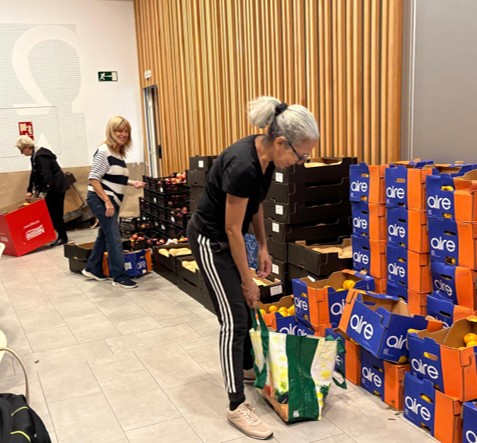
Ver 6 Fotos
Banco de Alimentos
Servicio semanal de entrega de productos frescos, precocinados y lotes básicos de primera necesidad en colaboración con la Fundació Banc dels Aliments, Fundació Ferrer, Aldi, DiSA y Mercabarna.
Ver fotos y detalles del reparto
Área Social
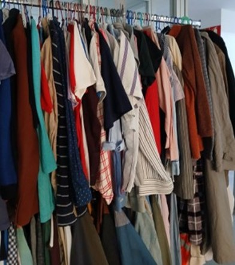
Ver Foto Real
Ropero Solidario
Servicio semanal de ropa limpia y en buen estado, calzado y complementos tanto infantiles como para adultos, facilitado gracias a donaciones vecinales y entidades aliadas.
Ver foto y funcionamiento
Área Social
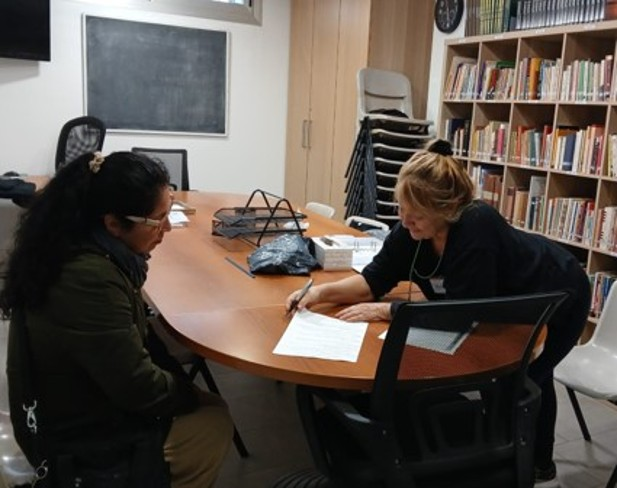
Ver Foto Real
Asesoramiento y 1ª Acogida
Información, orientación y derivación oficial a organismos públicos, Servicios Sociales de Barcelona y actividades comunitarias del Pla Comunitari de Sagrada Família.
Ver foto y horarios
Salud y Bienestar
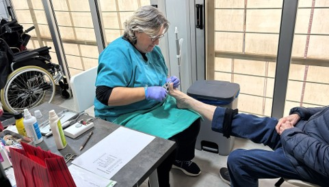
Ver Foto Real
Podología Solidaria
Proyecto trimestral desarrollado conjuntamente con los CAPs de Sagrada Família y Roger de Flor para el cuidado preventivo y podológico de personas mayores vulnerables.
Ver foto y convenio sanitario
Salud y Bienestar
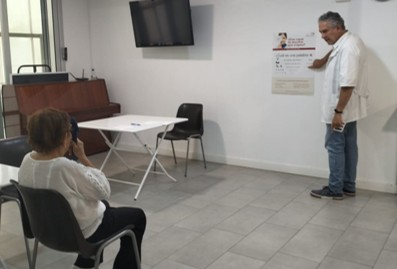
Ver 3 Fotos
Revisión Ocular y Ortopedia
Revisiones ópticas semestrales en colaboración con la Fundació Temps i Compromís, además de servicio solidario de préstamo gratuito de sillas de ruedas y andadores.
Ver fotos y disponibilidad
Formación y Empleo
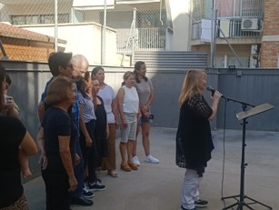
Ver 6 Fotos
Cursos de Idiomas
Clases regulares de catalán, castellano e inglés impartidas por profesores voluntarios, orientadas a facilitar la integración y la empleabilidad de los vecinos.
Ver fotos y grupos
Formación y Empleo
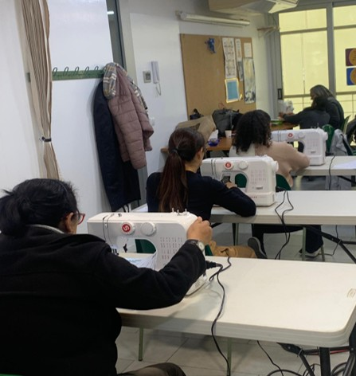
Ver 2 Fotos
Talleres de Costura
Espacio práctico de confección y arreglo textil donde los participantes adquieren destrezas manuales, autonomía y fortalecen lazos comunitarios.
Ver fotos de los talleres
Formación y Empleo
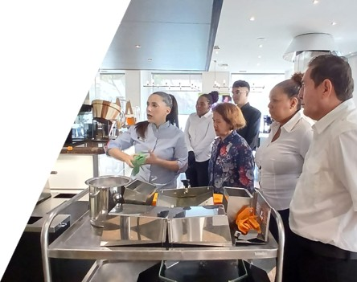
Ver 3 Fotos
Ayudante de Camarero
Curso especializado en protocolo y servicio de restauración, que incluye prácticas formativas reales y salidas culturales para fomentar la inserción en el sector hostelero.
Ver fotos y programa
Acción Internacional
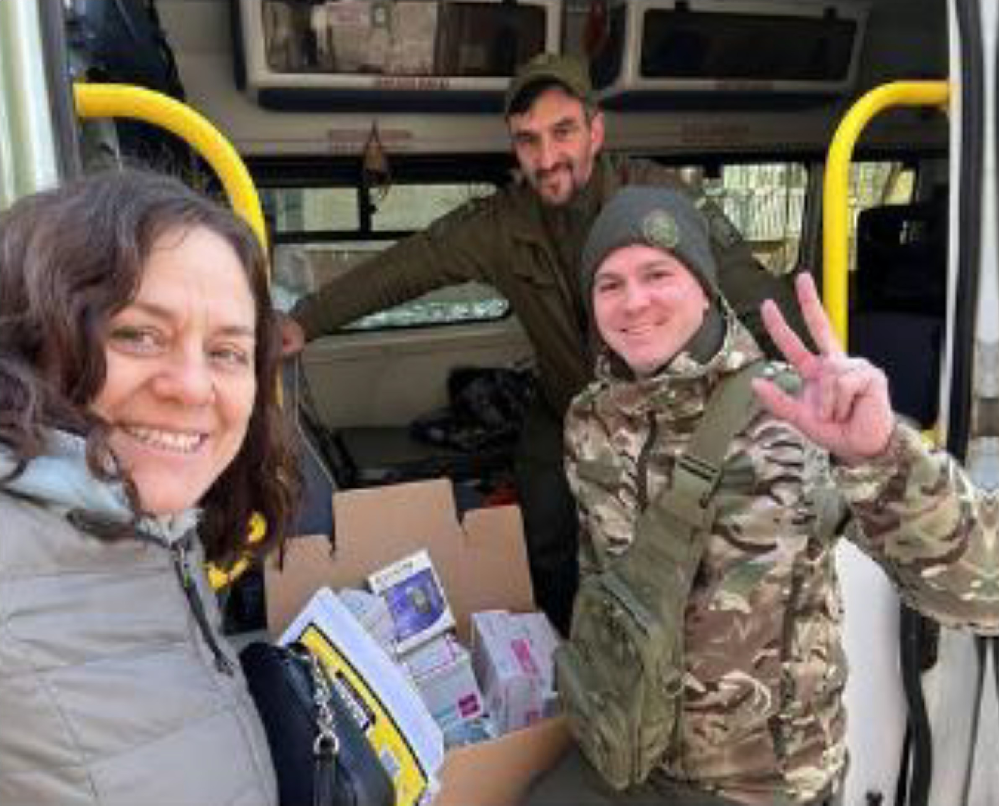
Ver 3 Fotos
Ayuda a Ucrania
Campaña solidaria permanente de recogida y envío de medicamentos esenciales, material sanitario de primeros auxilios y suministros de emergencia para zonas afectadas.
Ver fotos de los envíos
Acción Internacional
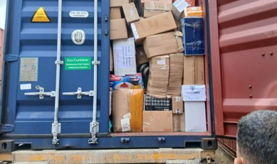
Ver 3 Fotos
Contenedores a Cuba
Coordinación logística y carga de contenedores de ayuda humanitaria (ropa, alimentos y equipamiento) gestionados en estrecha alianza con la ONG Acordes.
Ver fotos de la carga
Comunidad y Ocio
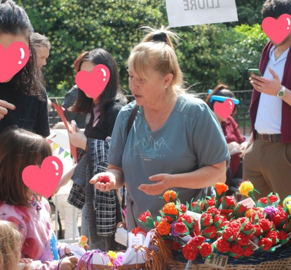
Ver 14 Fotos
Festa Major de Barri
Participación activa en las fiestas de Sagrada Família con talleres infantiles, juegos, pintacaras, globoflexia, ludoteca comunitaria y rosas solidarias.
Ver fotos de las fiestas
Comunidad y Ocio
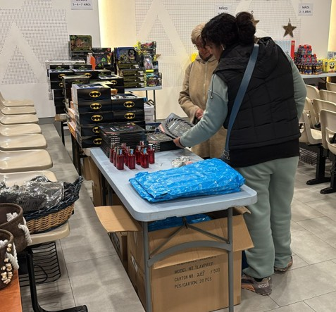
Ver 9 Fotos
Campaña Navidad y Reyes
Recogida y reparto de juguetes solidarios nuevos, libros infantiles y organización de almuerzos comunitarios de Año Nuevo para que nadie pase las fiestas en soledad.
Ver fotos de la campaña
Comunidad y Ocio
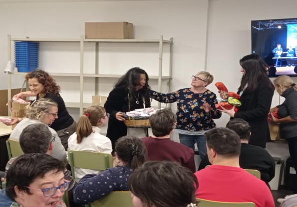
Ver 2 Fotos
Formación al Voluntariado
Capacitación continua para nuestros colaboradores: certificado oficial de manipulador de alimentos, protocolos de prevención y técnicas de intervención social.
Ver fotos y capacitarse
Juntos llegamos más lejos
Entidades con las que Colaboramos
La solidaridad se multiplica cuando creamos redes firmes entre entidades sociales, fundaciones e instituciones públicas.
Horario de Atención Presencial:
• Miércoles: 09:00 h a 12:30 h (todas las semanas).
• Viernes: 16:00 h a 19:00 h (segundo viernes de cada mes).
Metro cercano: L2 / L5 Sagrada Família • L4 / L5 Verdaguer
Envíanos un Mensaje
Rellena tus datos y responderemos a tu consulta a la mayor brevedad posible.
Categoría
Título del Proyecto
Descripción detallada del proyecto.
Colaboradores y Red:Entidades colaboradoras.
Horario o Frecuencia:Horario de atención.
Galería Fotográfica Haz clic en cualquier imagen para ampliar